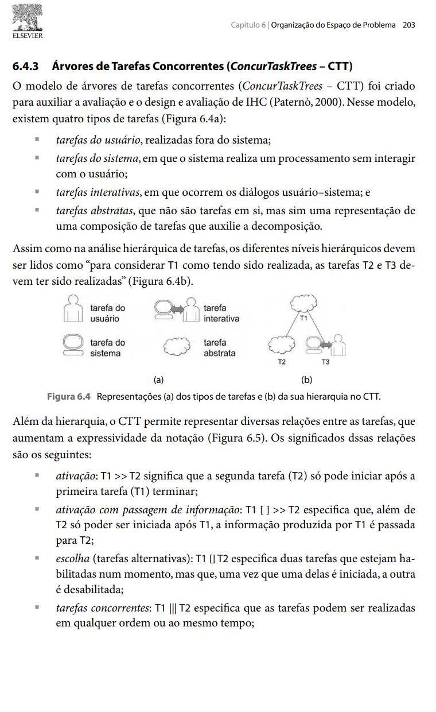
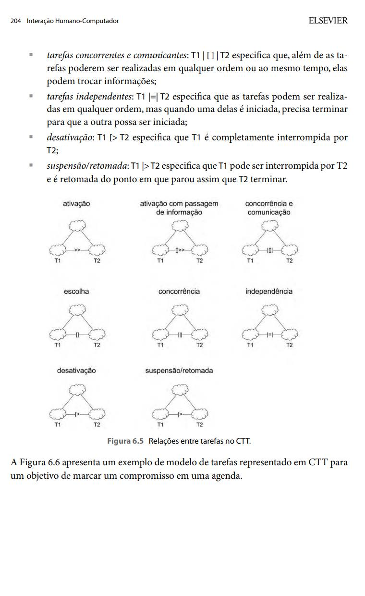

7. CTT da Avaliação de Disciplinas
Autor: Victor Andreozzi de La Rocque Couto · Revisor: Felipe Lopes Pedroza
Entrega: 2, Perfil do Usuário, Personas e Análise de Tarefas (parte individual, feita em 27/11/2026 a partir dos artefatos que Victor elaborou na Entrega 2 e na Entrega 5) · Funcionalidade de Victor no projeto: Avaliação de Disciplinas
Outros artefatos desta parte: 1. Visão geral e planejamento · 2. Coleta por brainstorming e aspectos éticos · 3. Perfil de usuário · 4. Persona Talita Farias · 5. Cenário da Avaliação de Disciplinas · 6. HTA da Avaliação de Disciplinas · 8. Verificação com as listas
1. Introdução
O modelo de árvores de tarefas concorrentes (ConcurTaskTrees, CTT) tem quatro tipos de tarefa: do usuário, do sistema, interativas e abstratas, e lê a hierarquia como “para considerar T1 realizada, as tarefas filhas devem ter sido realizadas” (Barbosa e Silva (2010, p. 203). Além da hierarquia, o CTT representa as relações entre tarefas irmãs com oito operadores (p. 203–204), mostrados nas Figura 16 e Figura 17.
Esta CTT modela a mesma tarefa da HTA de 6. HTA da Avaliação de Disciplinas, o que cumpre o pedido do plano de ensino de especificar a atividade do integrante com ao menos duas técnicas. Ela parte da CTT da Entrega 5 e corrige a DI-05 da inspeção de Felipe: “Enviar Avaliação” e “Processar Envio” agora são irmãs de “Preencher Avaliação”, e o nó das notas foi decomposto em duas tarefas ligadas por |||.

Fonte: BARBOSA, S. D. J.; SILVA, B. S. Interação Humano-Computador. Rio de Janeiro: Elsevier, 2010. Página: 203, Capítulo 6. Organização do Espaço de Problema, seção 6.4.3.

Fonte: BARBOSA, S. D. J.; SILVA, B. S. Interação Humano-Computador. Rio de Janeiro: Elsevier, 2010. Página: 204, Capítulo 6. Organização do Espaço de Problema, seção 6.4.3.
2. Diagramas
A árvore foi dividida em três figuras para caber na página. A Figura 18 mostra os dois níveis de cima; as tarefas abstratas marcadas com o número de uma figura são detalhadas na Figura 19 (localizar, consultar e descartar) e na Figura 20 (preencher). A legenda dos tipos de tarefa e dos operadores está no rodapé de cada figura.

Fonte: Victor Andreozzi de La Rocque Couto (2026). Clique na figura para abri-la em tamanho original.
Fonte: Victor Andreozzi de La Rocque Couto (2026). Clique na figura para abri-la em tamanho original.
Fonte: Victor Andreozzi de La Rocque Couto (2026). Clique na figura para abri-la em tamanho original.
3. Especificação dos nós
| Tarefa | Tipo | Operador com a seguinte | Justificativa |
|---|---|---|---|
| Avaliar Disciplina | Abstrata | — | Objetivo geral, o mesmo do objetivo 0 da HTA |
| Realizar Avaliação | Abstrata | [> Descartar Avaliação | O descarte interrompe a avaliação inteira, e não só o preenchimento (correção do problema B-01) |
| Localizar Disciplina | Abstrata | []>> | A disciplina escolhida é passada para a consulta e para o formulário |
| Abrir Avaliações | Interação | >> | A busca só fica disponível depois de abrir a lista |
| Escolher Forma de Busca | Abstrata | []>> | A forma escolhida produz a lista de onde sai a disciplina |
| Buscar, Filtrar ou Rolar a Lista | Interação | [] | São alternativas: ao começar uma, as outras deixam de ser necessárias |
| Selecionar Disciplina | Interação | — | Última tarefa de Localizar Disciplina |
| Consultar Avaliações | Abstrata (opcional) | |[]| | Pode acontecer junto com o preenchimento, e as médias informam as notas (correção do problema B-03) |
| Ver Médias e Ler Comentários | Interação | ||| | Podem ser feitas em qualquer ordem |
| Preencher Avaliação | Abstrata | >> | A revisão só começa com as notas preenchidas |
| Atribuir Notas | Abstrata | ||| | Notas e dados opcionais podem ser preenchidos em qualquer ordem |
| Lembrar a Experiência na Disciplina | Usuário | >> | Decisão feita fora do sistema, antes de escolher as notas |
| Atribuir Dificuldade e Atribuir Cobrança | Interação | ||| | Decomposição do nó das notas (correção da DI-05); qualquer ordem |
| Informar Dados Opcionais | Abstrata | |> Ver Dica | O preenchimento pode ser suspenso para ler a dica e é retomado de onde parou |
| Informar Semestre e Professor e Redigir Comentário | Interação | |=| | Qualquer ordem, mas um campo é terminado antes de começar o outro |
| Ver Dica “O que é cobrança?” | Interação | — | Interrompe o preenchimento sem perder os dados |
| Revisar Avaliação | Interação | >> | O envio só fica disponível depois da revisão (correção do problema B-02) |
| Enviar Avaliação | Interação | []>> | Irmã de Preencher Avaliação (correção da DI-05); passa os dados ao sistema |
| Processar Envio | Sistema | []>> | Grava a avaliação anônima e recalcula as médias; o resultado vai para a confirmação |
| Mostrar Confirmação | Sistema | — | “Avaliação concluída!” ou a mensagem de erro com “Tentar novamente” |
| Descartar Avaliação | Abstrata | — | Clicar em Descartar >> Confirmar Descarte |
Fonte: Victor Andreozzi de La Rocque Couto (2026).
4. Operadores usados
A Tabela 18 mostra onde cada um dos oito operadores do livro aparece na árvore.
| Operador | Significado (p. 203–204) | Onde aparece | Item da lista |
|---|---|---|---|
T1 >> T2 | T2 só começa depois que T1 termina | Abrir Avaliações e Escolher Forma de Busca; Preencher e Revisar; Revisar e Enviar; Clicar em Descartar e Confirmar Descarte | Item 42 |
T1 []>> T2 | Ativação com passagem de informação | Localizar e Consultar; Enviar, Processar Envio e Mostrar Confirmação | Item 43 |
T1 [] T2 | Escolha | Buscar, Filtrar ou Rolar a Lista | Item 44 |
T1 ||| T2 | Concorrência | Ver Médias e Ler Comentários; Atribuir Dificuldade e Atribuir Cobrança; Atribuir Notas e Informar Dados Opcionais | Item 45 |
T1 |[]| T2 | Concorrência com troca de informação | Consultar Avaliações e Preencher Avaliação | Item 46 |
T1 |=| T2 | Independência | Informar Semestre e Professor e Redigir Comentário | Item 47 |
T1 [> T2 | Desativação | Realizar Avaliação e Descartar Avaliação | Item 48 |
T1 |> T2 | Suspensão e retomada | Informar Dados Opcionais e Ver Dica “O que é cobrança?” | Item 49 |
Fonte: Victor Andreozzi de La Rocque Couto (2026).
5. Referências
- BARBOSA, Simone Diniz Junqueira; SILVA, Bruno Santana da. Interação Humano-Computador. Rio de Janeiro: Elsevier, 2010.
- GRUPO 02. Entrega 2: Perfil do Usuário, Personas e Análise de Tarefas (documento do grupo, versões 1.0 a 1.10). Universidade de Brasília, 2026. Disponível em: <https://interacao-humano-computador.github.io/2026.2-Grupo02/entrega2.html>.
- PEDROZA, Felipe Lopes. Inspeção dos artefatos de Victor Andreozzi de La Rocque Couto (Entregas 2 a 7). Universidade de Brasília, 2026. Disponível em: <https://interacao-humano-computador.github.io/2026.2-Grupo02/docs/Grupo2InspecaoArtefatosVictorPorFelipe.pdf>.
Histórico de versão
| Versão | Data | Descrição | Autor(es) | Revisor(es) | Declaração de ferramenta de IA |
|---|---|---|---|---|---|
| 1.0 | 27/11/2026 | Parte individual da Entrega 2: CTT da Avaliação de Disciplinas, com os quatro tipos de tarefa e os oito operadores (correção da DI-05) | Victor Andreozzi de La Rocque Couto | Felipe Lopes Pedroza | Claude (Anthropic): leitura da transcrição automática do vídeo da sessão, contagem das menções, organização das páginas e das tabelas a partir dos artefatos de Victor na Entrega 2 e na Entrega 5 e captura das páginas do livro; a escolha da técnica, as decisões de projeto e as conclusões são do autor |